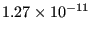
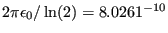
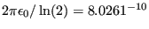
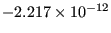

In this section the capacitance of a cylindrical capacitor is calculated with
inner radius 1 m, outer radius 2 m and length 10 m. The capacitor is filled
with air, its permittivity is
 C
C Nm
Nm . An extract of the input deck, which is part of the
test example suite, is shown below:
. An extract of the input deck, which is part of the
test example suite, is shown below:
*NODE, NSET=Nall ... *ELEMENT, TYPE=C3D20, ELSET=Eall ... *NSET,NSET=Nin 1, 2, ... *NSET,NSET=Nout 57, 58, ... *SURFACE,NAME=S1,TYPE=ELEMENT 6,S3 1,S3 *MATERIAL,NAME=EL *CONDUCTIVITY 8.8541878176e-12 *SOLID SECTION,ELSET=Eall,MATERIAL=EL *STEP *HEAT TRANSFER,STEADY STATE *BOUNDARY Nin,11,11,2. Nout,11,11,1. *EL FILE HFL *SECTION PRINT,SURFACE=S1 FLUX *END STEP
As explained in Section 6.9.13 the capacitance can be
calculated by determining the total heat flux through one of the capacitor's
surfaces due to a unit temperature difference between the surfaces. The material in between the
surfaces of the capacitor is assigned a conductivity equal to its
permittivity. Here, only one degree of the capacitor has been modeled. In
axial direction the mesh is very coarse, since no variation of the temperature is expected. Figure
24 shows that the heat flux at the inner radius is
 W/m . This corresponds to a total heat flow of
W. The analytical formula for the capacitor yields
 C/V.
. This corresponds to a total heat flow of
W. The analytical formula for the capacitor yields
 C/V.
The total flux through the inner surface S1 is also stored in the .dat file because of the *SECTION PRINT keyword card in the input deck. It amounts to  W. This value is negative, because the flux is entering the space in between the capacitor's surfaces. Since only one degree was modeled, this value has to be multiplied by 360 and yields the same value as above.